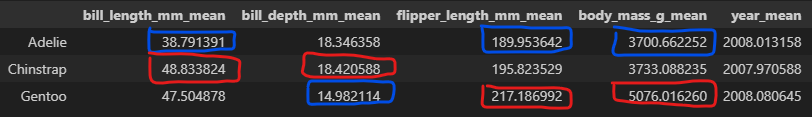
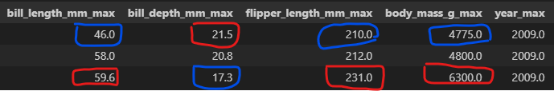
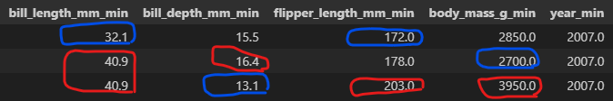

from palmerpenguins import load_penguinspeng = load_penguins()peng
species
island
bill_length_mm
bill_depth_mm
flipper_length_mm
body_mass_g
sex
year
0
Adelie
Torgersen
39.1
18.7
181.0
3750.0
male
2007
1
Adelie
Torgersen
39.5
17.4
186.0
3800.0
female
2007
2
Adelie
Torgersen
40.3
18.0
195.0
3250.0
female
2007
3
Adelie
Torgersen
NaN
NaN
NaN
NaN
NaN
2007
4
Adelie
Torgersen
36.7
19.3
193.0
3450.0
female
2007
...
...
...
...
...
...
...
...
...
339
Chinstrap
Dream
55.8
19.8
207.0
4000.0
male
2009
340
Chinstrap
Dream
43.5
18.1
202.0
3400.0
female
2009
341
Chinstrap
Dream
49.6
18.2
193.0
3775.0
male
2009
342
Chinstrap
Dream
50.8
19.0
210.0
4100.0
male
2009
343
Chinstrap
Dream
50.2
18.7
198.0
3775.0
female
2009
344 rows × 8 columns
팔머 펭귄 데이터는 남극에 서식하는 펭귄에 대한 정보를 담고 있음.
각 열에 대한 설명
열 이름
데이터 타입
설명
species
문자열 (str)
펭귄의 종
island
문자열 (str)
펭귄이 발견된 섬
bill_length_mm
실수 (float)
부리 길이 (mm 단위)
bill_depth_mm
실수 (float)
부리 깊이 (mm 단위)
flipper_length_mm
정수 (int)
날개(지느러미) 길이 (mm 단위)
body_mass_g
정수 (int)
몸무게 (g 단위)
sex
문자열 (str)
성별
year
정수 (int)
데이터 수집된 연도
이후 팔머 펭귄의 종, 서식 섬, 성별 확인
set(peng['species']) # 어떤 종 있는지 확인
{'Adelie', 'Chinstrap', 'Gentoo'}
펭귄의 종은 Adelie, Chinstrap, Gentoo 의 세 종류 확인 가능.
set(peng['island']) # 어떤 섬 있는지 확인
{'Biscoe', 'Dream', 'Torgersen'}
펭귄이 서식하는 섬은 Biscoe, Dream, Torgersen 으로 확인 가능.
set(peng['sex']) # 어떤 성별 있는지 확인
{'female', 'male', nan}
펭귄의 성별은 female, male 과 수집되지 않아 데이터가 없는 nan 으로 확인 가능.
2. 팔머 펭귄 데이터 계산 함수 작성 및 데이터 프레임 정리
팔머 펭귄의 종별 특징을 확인하기 위해서, 숫자형 데이터의 경우 평균값, 최댓값, 최솟값을 확인. 이외 데이터인 서식 섬과 성별은 각각의 해당 개체 수 확인.
위 데이터들을 확인할 수 있는 함수 작성.
import pandas as pd# 모든 펭귄 종에 대해 평균, 최댓값, 최솟값 및 개체 수를 계산하는 함수def summarize_species(data, name):# 특정 종의 데이터 필터링 species_data = data.loc[data['species'] == name, ['bill_length_mm', 'bill_depth_mm', 'flipper_length_mm', 'body_mass_g', 'year']]# 숫자형 데이터 평균, 최댓값, 최솟값 계산 species_mean = species_data.mean() species_max = species_data.max() species_min = species_data.min()# 섬별 서식 수 계산 biscoe_live =len(data.loc[(data['species'] == name) & (data['island'] =='Biscoe')]) dream_live =len(data.loc[(data['species'] == name) & (data['island'] =='Dream')]) torgersen_live =len(data.loc[(data['species'] == name) & (data['island'] =='Torgersen')]) island_nan = data.loc[data['species'] == name, 'island'].isna().sum()# 성별 개체 수 계산 male_count =len(data.loc[(data['species'] == name) & (data['sex'] =='male')]) female_count =len(data.loc[(data['species'] == name) & (data['sex'] =='female')]) sex_nan = data.loc[data['species'] == name, 'sex'].isna().sum()# 데이터프레임으로 변환 species_df = pd.DataFrame({'bill_length_mm_mean': [species_mean['bill_length_mm']],'bill_depth_mm_mean': [species_mean['bill_depth_mm']],'flipper_length_mm_mean': [species_mean['flipper_length_mm']],'body_mass_g_mean': [species_mean['body_mass_g']],'year_mean': [species_mean['year']],'bill_length_mm_max': [species_max['bill_length_mm']],'bill_depth_mm_max': [species_max['bill_depth_mm']],'flipper_length_mm_max': [species_max['flipper_length_mm']],'body_mass_g_max': [species_max['body_mass_g']],'year_max': [species_max['year']],'bill_length_mm_min': [species_min['bill_length_mm']],'bill_depth_mm_min': [species_min['bill_depth_mm']],'flipper_length_mm_min': [species_min['flipper_length_mm']],'body_mass_g_min': [species_min['body_mass_g']],'year_min': [species_min['year']],'Biscoe_live': [biscoe_live],'Dream_live': [dream_live],'Torgersen_live': [torgersen_live],'island_nan': [island_nan],'male': [male_count],'female': [female_count],'sex_nan': [sex_nan] })return species_df
만든 함수 통해서 각 펭귄 종에 대한 데이터 뽑아낸 후, 하나의 데이터 프레임으로 정리.
# 만든 함수 통해 세 종류 펭귄 데이터 구하기peng_A_df = summarize_species(peng, 'Adelie')peng_C_df = summarize_species(peng, 'Chinstrap')peng_G_df = summarize_species(peng, 'Gentoo')# 세 개의 데이터를 하나의 데이터프레임으로 합치기peng_final = pd.concat([peng_A_df, peng_C_df, peng_G_df], ignore_index=True)# 펭귄 종 이름으로 인덱스 변경peng_final.index = ['Adelie', 'Chinstrap', 'Gentoo']# 최종 결과 확인pd.set_option('display.max_columns', None)pd.set_option('display.width', 1000)peng_final
bill_length_mm_mean
bill_depth_mm_mean
flipper_length_mm_mean
body_mass_g_mean
year_mean
bill_length_mm_max
bill_depth_mm_max
flipper_length_mm_max
body_mass_g_max
year_max
bill_length_mm_min
bill_depth_mm_min
flipper_length_mm_min
body_mass_g_min
year_min
Biscoe_live
Dream_live
Torgersen_live
island_nan
male
female
sex_nan
Adelie
38.791391
18.346358
189.953642
3700.662252
2008.013158
46.0
21.5
210.0
4775.0
2009.0
32.1
15.5
172.0
2850.0
2007.0
44
56
52
0
73
73
6
Chinstrap
48.833824
18.420588
195.823529
3733.088235
2007.970588
58.0
20.8
212.0
4800.0
2009.0
40.9
16.4
178.0
2700.0
2007.0
0
68
0
0
34
34
0
Gentoo
47.504878
14.982114
217.186992
5076.016260
2008.080645
59.6
17.3
231.0
6300.0
2009.0
40.9
13.1
203.0
3950.0
2007.0
124
0
0
0
61
58
5
최종 데이터 프레임 형식으로 세 종에 대한 정리 데이터 확인 가능.
3. 최종 데이터 통한 팔머 펭귄 종별 특징 분석
1) 분석 방향성 정하기
- 분석 가능 여부
먼저, 각 종들의 성비가 비슷함(34:34, 73:73, 61:58)을 통해 성비의 균형에 따라 각 펭귄들의 데이터가 비교할 가치가 있음.
또한 각 데이터가 입력된 년도가 비슷하기에 비교할 가치가 있음.
- 분석 방향성
평균데이터를 통해서 각 펭귄 종들의 신체적 특징 비교 가능.
최대, 최소 데이터를 통해서 이상치를 비교할 수 있음.
2) 데이터 비교
- 평균 데이터

해당 데이터를 통해 일반적으로 부리는 Chinstrap이 크고, 다른 종들은 상대적으로 작음을 확인 가능.
또한 날개 길이와 몸무게는 Gentoo가 가장 크기 때문에 상대적으로 덩치가 큰 편임. 반대로, Adelie의 덩치가 상대적으로 작은 편임을 알 수 있음.
- 최대, 최소 데이터


최대, 최소 데이터를 통해서는 이상치가 Gentoo와 Adelie에 많이 있음을 확인 가능.
Adelie는 세 지역에 고루 분포해있기 때문에 이상치가 있을 확률이 높고, Gentoo는 한 지역에만 있기 때문에 종 자체가 자랄 때 변동폭이 있음을 유추 가능.
추가로 Chinstrap은 종이 평균적으로 비슷하게 자람을 확인 가능.
3) 분석 결과
부리 길이
Chinstrap > Gentoo > Adelie
부리 깊이
Chinstrap > Adelie > Gentoo
날개 길이, 몸무게
Gentoo > Chinstrap > Adelie
이상치 존재 가능성
Gentoo > Adelie > Chinstrap
4) 추가 분석 제안
‘Adelie’ 종은 3가지 섬에 모두 살기 때문에 해당 종끼리의 데이터 비교를 통해 사는 환경에 따라 달라지는 경향을 확인 가능함.